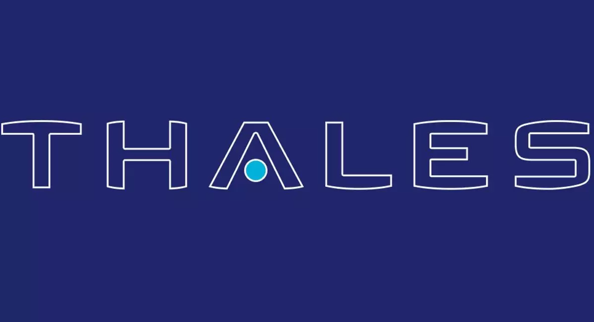
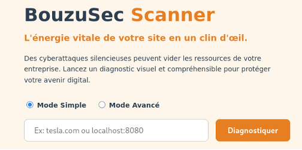
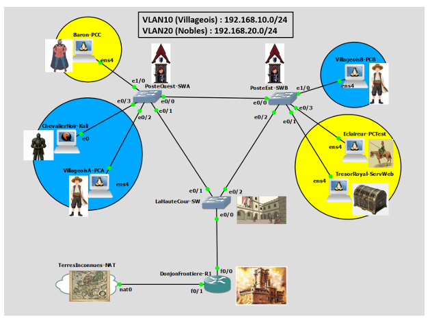
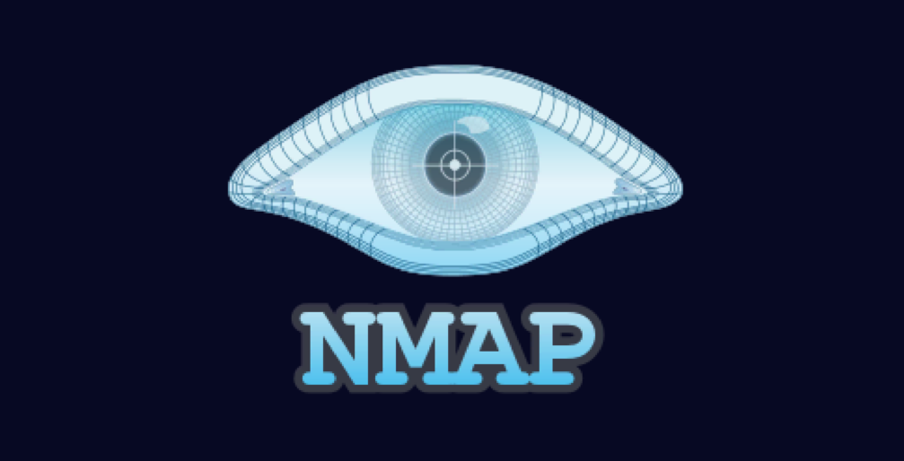
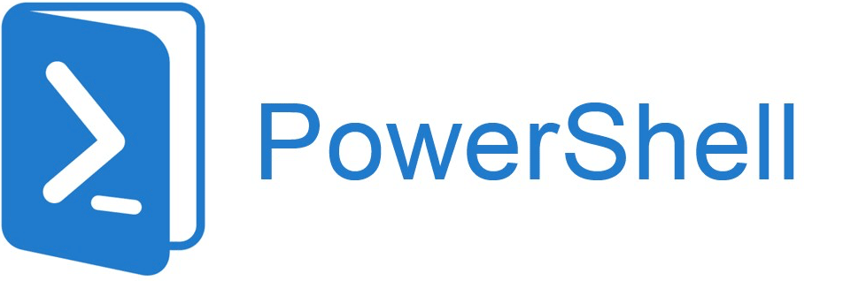
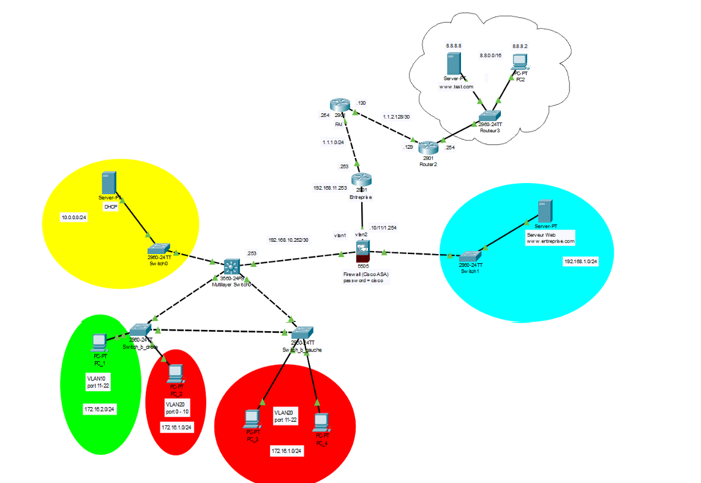
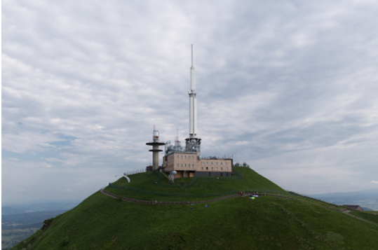
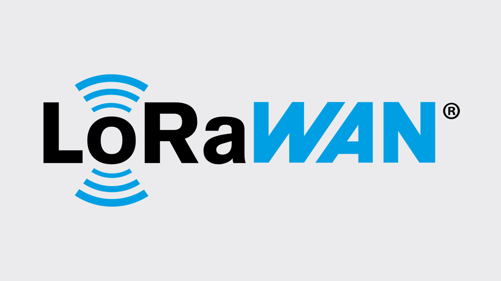
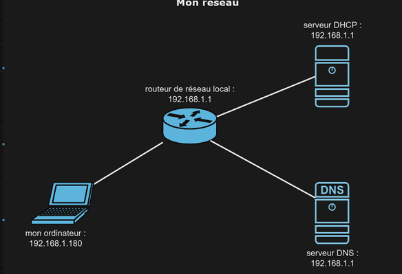
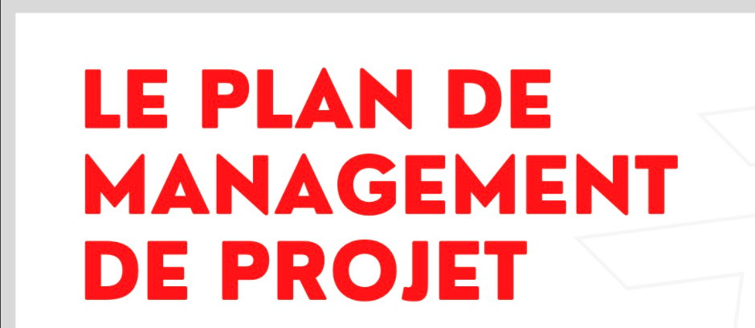

Mes Projets
16 projets académiques et personnels — cliquez sur une carte pour découvrir les détails
Compromettre une Infrastructure Vulnérable de A à Z
Exploitation de failles, pivot réseau et élévation de privilèges root sur environnement Docker vulnérable.
 Réseaux & Sécurité
Réseaux & Sécurité
Concevoir un Cœur de Réseau d'Entreprise Sécurisé
Architecture complète : MLS, VLANs, Cisco ASA, DMZ, NAT statique, OSPF — conception de bout en bout.

Systèmes & IoTDévelopper un Système de Surveillance Avionique pour Thales
Système de surveillance embarqué : Raspberry Pi + Flask + MariaDB pour un banc avionique Thales.

Cybersécurité & DevConcevoir un Scanner de Vulnérabilités Web Open Source
Scanner web 100% open source avec scoring ANSSI et rapports PDF automatisés. Architecture Docker, interface intuitive.
Documenter l'Architecture Technique Interne de BouzuSec
Annexe technique complète : algorithmes Python, scoring ANSSI, Docker, génération PDF — 11 pages.

CybersécuritéExploiter et Défendre les Vulnérabilités de Couche 2
VLAN Hopping, DHCP Spoofing et ARP Spoofing — attaques et contre-mesures sur environnement GNS3/Cisco.

PentestingObtenir un Accès Root via Reverse Shell et Exploitation SUID
Nmap → Reverse Shell PHP → SUID exploit. Compromission complète d'une machine Linux.
Compromettre un Serveur Windows avec EternalBlue et Injection SQL
SQL Dump + MS17-010 (EternalBlue) via Metasploit → accès SYSTEM Meterpreter.

Systèmes & AdminAutomatiser la Gestion d'un Active Directory avec PowerShell
Script PowerShell complet : création d'OUs, comptes utilisateurs depuis CSV, archivage ZIP, logs horodatés.

RéseauxMettre en Place une Architecture DMZ avec Pare-feu ASA
VLANs + NAT statique/dynamique + ACL sur Cisco ASA pour isolation des flux critiques en DMZ.

Télécoms & SignauxAnalyser les Systèmes de Diffusion TV Analogique et Numérique
Étude TNT/Satellite : QPSK, Viterbi, Reed-Solomon, faisceaux hertziens. Mesures terrain à Theys.

Réseaux IoTOptimiser une Liaison LoRaWAN en Milieu Urbain
Campagnes RSSI in/outdoor pour choisir la configuration SF/BW optimale en déploiement IoT urbain.
Caractériser l'Atténuation d'un Câble Coaxial par Mesures
Mesures expérimentales + modèle Matlab AdB/m(f)=α√f sur câble RG-58.

RéseauxCartographier et Analyser un Réseau Local Domestique
Scan et cartographie d'un LAN domestique réel : adressage, masques, routeur SFR, équipements connectés.
Sensibiliser des Collégiens aux Risques de l'E-Réputation
Jeu d'enquête interactif créé pour initier des collégiens aux dangers de la publication en ligne.

Gestion de projetPiloter un Projet Complexe avec un Plan de Management
PAQ complet, diagramme de Gantt, RACI et contrôle de traçabilité pour un projet technique multi-équipes.